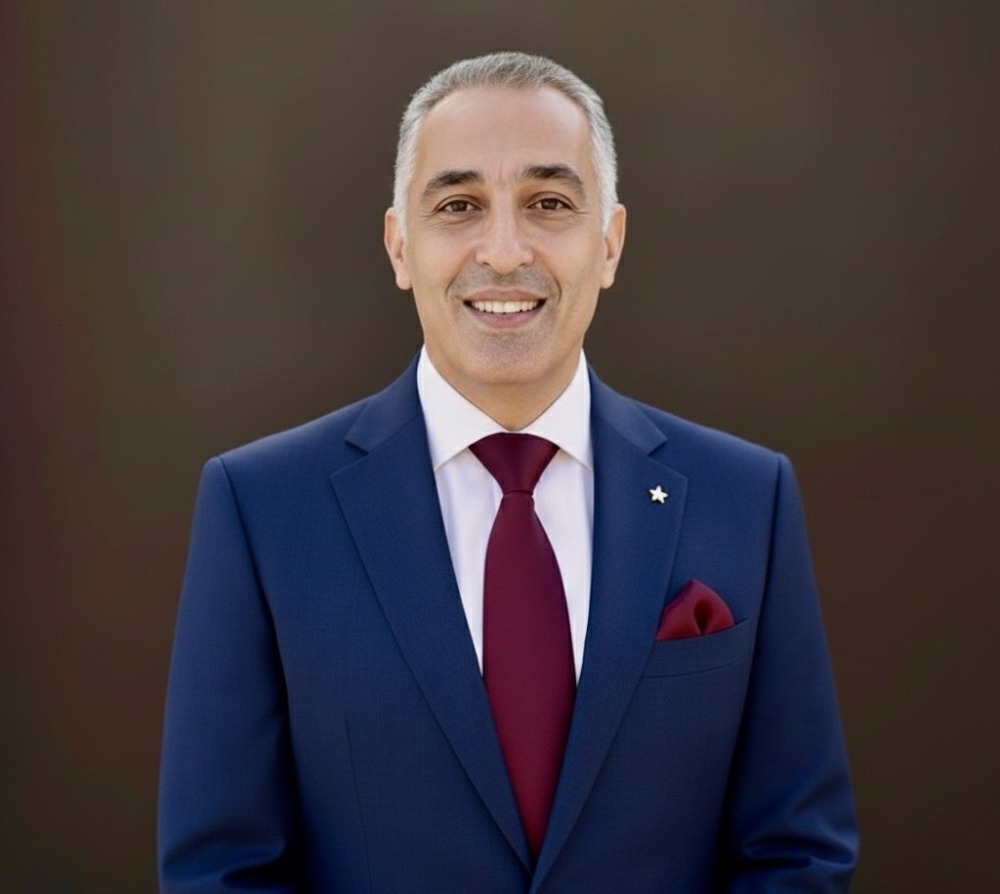

محامي بالقاهرة (وسط البلد) لو بتدوّر على استشارة قانونية أونلاين أو محامي بالقرب منك — خبرتنا الأساسية في الترافع أمام محكمة النقض، ونمثّل الشركات والأفراد أمام كل درجات التقاضي، ونقدّم للعملاء الأجانب والعرب وكيلاً ومحامياً مراسلاً داخل مصر.

بدل ما تتصل تسأل "قضيتي وصلت فين؟"، تقدر تدخل بإيميلك وتشوف بنفسك: مواعيد الجلسات القادمة، وكل مستندات قضيتك (PDF خفيفة تتفتح وتتطبع بسهولة) — أول بأول، وبسرية تامة، وأنت بياناتك هي بس اللي بتظهرلك.
بدل ما تبني إدارة قانونية… خليها علينا.
مؤسسة قانونية بوسط البلد — القاهرة. نمثّل الشركات والأفراد أمام كل درجات التقاضي، وأمام محكمة النقض. محامون ومستشارون ومحاسبون قانونيون وخبراء ضرائب تحت سقف واحد.
للشركات: عقود، عمالة، تحصيل، ضرائب، التقاضي أمام المحاكم الاقتصادية، اشتراك قانوني شهري.
للعملاء الأجانب والعرب: وكيل ومحامٍ مراسل داخل مصر — تأسيس الكيانات، حماية الاستثمار، العقارات والمواريث، تنفيذ الأحكام والتحكيم. تقارير دورية بالعربية والإنجليزية.
للأفراد: الجنايات والطعن بالنقض، المدني والتجاري، الأحوال الشخصية.
مقر المؤسسة في مبنى تاريخي بميدان مصطفى كامل، عابدين — على بعد خطوات من شارع قصر النيل.
الترافع أمام محكمة النقض والمحكمة الإدارية العليا — تخصص المؤسسة الأساسي، وقراءة الملف من أول يوم بعين المرحلة الأخيرة.
الدفاع والترافع أمام النيابة العامة والمحاكم الجنائية بكل درجاتها، من الجنح إلى الجنايات.
باقات اشتراك ثابتة تغطي العقود وشؤون العمالة والتحصيل والاستشارات الدورية بأسعار معلنة.
إجراءات تنفيذ الأحكام والقرارات التحكيمية الأجنبية أمام المحاكم المصرية.
متابعة ملفك داخل مصر وأنت مقيم بالخارج عبر توكيل مُصدّق من القنصلية المصرية.
حصر التركة، إعلام الوراثة، وقسمة الميراث ودياً أو قضائياً.
دليل كامل بكل الأقسام: مجالات الممارسة الكاملة · للعملاء الأجانب والعرب: Foreign & Arab Clients — English
من غير ذكر أي اسم أو رقم قضية — دي القطاعات اللي نشتغل فيها بانتظام ولينا فيها سوابق فعلية:
نزاعات مع مطورين عقاريين وشركات سياحية — فسخ عقود، تعويض عن الإخلال ببنود التعاقد، ومنازعات ملكية.
نزاعات تعاقدية بين شركات، تحصيل ديون متعثرة، ومنازعات أمام المحاكم الاقتصادية.
ملفات ورثة متعددين، داخل مصر وخارجها، من الاتفاق الودي إلى دعوى القسمة القضائية.
ملفات جنح وجنايات وصلت لمرحلة الطعن بالنقض أو الإدارية العليا — تخصص المؤسسة الأساسي.
منازعات فصل تعسفي ومكافأة نهاية خدمة، ودعاوى تعويض عن إصابات وحوادث عمل أمام مكاتب ومحاكم العمل.
الدفاع من مرحلة التحقيق في النيابة العامة وحتى المحاكمة، في قضايا الجنح والجنايات بمختلف أنواعها.
دعاوى وطعون أمام محاكم القضاء الإداري (إلغاء قرارات إدارية، تأديبية) قبل الوصول لمرحلة الإدارية العليا.
هذه فئات عامة لطبيعة القضايا لا تفاصيل قضية بعينها، حفاظاً على سرية بيانات عملائنا.
مقيّد بجداول المحاماة منذ 1994، وأمام محكمة النقض منذ 2012. عضو اتحاد المحامين العرب · عضو مجلس تأديب المحامين (2004–2010). له إسهامات قانونية منشورة، ومرشح سابق لنقابة المحامين بالقاهرة.
فريق العمل يضم أيضاً محامين ومحاسبين قانونيين وخبراء ضرائب يعملون تحت إشراف المؤسسة مباشرة. سيتم إضافة بقية أعضاء الفريق ببياناتهم وصورهم قريباً.
قريباً على هذا القسم: نماذج مذكرات وطعون بالنقض (بصيغة معدّة للنشر لا تحمل بيانات عملاء)، ومقتطفات صوتية من مرافعات نموذجية، وصور من فعاليات المكتب.
حفاظاً على سرية بيانات عملائنا، لا نعرض هنا أي ملف أو تسجيل يخص قضية بعينها إلا بعد إزالة كل ما يكشف هوية الأطراف والحصول على موافقة صريحة عند الاقتضاء.
تقييمك بعد أي تجربة معانا بيساعد عملاء تانيين يوصلولنا — شاركنا رأيك على جوجل.
لو جيت مصر واحتجت محامي — سواء عن طريق السفارة أو القنصلية، أو بحثت بنفسك — أكتر حاجة بتضيع الوقت والثقة هي: محامي مش بيرد بسرعة، أتعاب من غير سعر واضح مكتوب، وملف بتفقد متابعته وانت برّه مصر. إحنا بنشتغل بعكس كده: تواصل مباشر بالعربي أو الإنجليزي مع المحامي المسؤول عن ملفك شخصياً (مش موظف استقبال)، نطاق عمل وأتعاب مكتوبة وواضحة من أول يوم، وتقارير دورية بالكتابة — حتى لو مفيش تطور جديد في الملف — علشان تكون مطمّن وانت متابع من بعيد.
قضايا جنائية، مدنية، عقود، أو نزاعات شركات — سواء جالنا الملف مباشرة أو عن طريق السفارة/القنصلية، أو بحثت عننا بنفسك.
لو مكتبك عنده عميل محتاج تمثيل قانوني في مصر — بنشتغل كمحامٍ مراسل محلي: نفس الملف، نفس معايير المتابعة والتقارير الدورية، باتفاق أتعاب واضح (بالساعة أو مقطوعية أو عمولة إحالة).
لعملائنا المصريين اللي محتاجين تمثيل قانوني في الخارج، بنبني شبكة مكاتب أجنبية وعربية موثوقة نتعاون معاها بالتبادل — إحالة كل طرف لعملائه للمكتب التاني حسب الدولة المطلوبة.
عندك مكتب بره مصر وعايز تتعاون معانا في تمثيل عملائك هنا، أو عميل من عملائك محتاج محامي في مصر؟ تواصل معانا ونبعتلك تفاصيل التعاون.
العنوان: 48 شارع قصر النيل، ميدان مصطفى كامل، عابدين (الفوالة)، وسط البلد، الدور السادس، مكتب 25 — القاهرة
ساعات العمل: السبت إلى الأربعاء، 1:00 ظهراً — 6:00 مساءً بتوقيت القاهرة
اجتماعات عملاء الخارج تُحدَّد بموعد مسبق، ويمكن ترتيبها خارج ساعات العمل بما يناسب فارق التوقيت.
الهاتف / واتساب: 0120 855 5806
البريد الإلكتروني: info.hamlf@gmail.com (بريد الدومين info@hamlf.com قيد الإعداد)
صفحة الفيسبوك: facebook.com/info.hamlf
تقييمنا على جوجل: قيّمنا على خرائط جوجل
(الرابط ده هو نفسه صفحتنا على خرائط جوجل — استخدمه للتقييم أو لمعرفة الموقع)